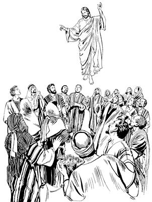

Yesusti Wepto Pogsiognangdi Ulameka
Sembe Lukasti Mome Toro Pibog Yubu
“Allahri Eldamne Yame Walinge tatsilul,” aro Yesusti salag lebogha (1:1-5)
1
1-2 Teofilus nani, samenag mome pipsinge ane. Yesusti alnibaogti, ulamogti ambarelamsiogti, imag yingkiogpa, ni ulamogne sembe mome toro pipsi. El neneko anam imag yingkin komag Allah Eldamne Yame Walinge Elag wamogpa, Yesusti nimi a'obare wepsiogti, pogsiog. Yesusti wepto pogsiognang tanekoag “A'undi nia mangkina undo-undo ulamlulom,” aro ambatsiogpa, Allah imagneri kiliro tobogha sembe mome topsi.3 El obekpa, seklero tebaogti, kamag taogne, “Na kamag tanonge imniikti, ‘Sik, kamag tao,’ sembaukang,” aro kekneba maikno sin haingag ulamog. Ulamogti, “Allahri Eldamne yubu ka'erop nimi wali uro saelbahilulne,” sembe ambarelamsiogti, “Naipsabori imnukang,” aro lag tangom tognop tangom alamogha inipna teng nhon epto naualbare taog. 4-5 Ik nhon sum Yesusti wepsiogti, pogsiogneap kwaneng nhon telamekti ambarelamsiogti, iriklamsiogti, “Yohanesti samenag nimi maghag pelengelamsiogne mag moag pelengkipsiog aghana, olog wapmunba, Allahri Eldamne Yame Walinge a'unag pelengkipsilul. Ane sembe, Allahri Eldamne Yame Walinge a'unag anam tatsin komag as Yerusalem anea lamba pheng kom. Na Naniri, ‘Nandamne Yame tatsinun,’ aro salag lebogne Nari ambatsinonge neneko nang-nang aro wamlulom,” aro ambatsiog.
Yesus imag yingkiogha (1:6-11)
6 Yesusti wepto pogsiog nimi taneko ik nhon sum Yesusap winiro wamekti hailamekti, “Nai, samenag Roma nimiri nu Israel nimi saelbamsiek komag wamubu saog uro nu ‘Israel nimi mog so'o nuringe ngai taukap aro paliag nembahinun,’ aro leplam, te?” aro haibaek.
7 Wene aro haibaekpa Yesusti, “Allahri Israel nen samoro paliag nembahilulne etsum anena a'unna eltanep kom. Nani Allah el mo el wamlari saelbamlari, karebalul aghana, 8 Allah Eldamne Yame Walinge a'unag kulukul aleri, mikip nembahileba, Na wamnori ulamnoba imneomneap, Nanag uro yabilneap, amik uro yabilulneap sembe as Yerusalem, mog so'o Yudea, mog so'o Samaria, as tala-tala im tiptobag so'o tiptobag wamangneag pimundi, ambarelamsululom,” seog.
9 Wene aro ambarelamsiog abeneko imag agha Allahri Yesus kiliro tolamogpa, toari niknilamogpa, Eldi wepto pogsiognangdi tiwalengkamek.

Imag agha Allahri Yesus kiliro tolamog (ACT 1.9)
10-11 El imag yangkalamogpa, Ilipsabori tiwalengkamekti, hain ebom alamekag agha nimi phende ag solomne enektopne sin peramag sekamdekne abenekori sin yubu ambarelamsirekti, “A'un mog so'o Galilea nimi. A'un sa'a sembe imag tiwalengkamlom? Yesus poneko a'un laplobi agha Allahri imag agha kiliro tolamlaba, tiwalengkamlomne nene saog uro amik kulukul alulne babe yangkalamlaba tiwalengkalomne saog uro kulukul alul,” aro ambatsirek.
Yesusti Wepto Pogsiognang, “Allah Yame walinge kulukul alul,” aro nang-nang aro wameka (1:12-14)
12-13 Ambatsirekpa Yesusti Wepto Pogsiog nimi taneko yim Zaitun anekoa samoro as Yerusalem yaek. Zaitun yimag aneko Yerusalem ana we komaa samoro Yerusalem yingkina nimiri ae agha sesog wamekag aneko ae tika alikinagneag waelbaekti, wamek. Sin wameknena: Petrus, Yohanes, Yakobus, Andreas, Filipus, Tomas, Bartolomeus, Matius, Alfeus elme Yakobus, Simon ponena “Roma nimi luknubahibeberi, mo sekukap,” aro yin saelbamogneap, Yakobus elme Yudasap sin wamek. 14 Sin ma'aptangto wamekti, sol wali, wali uro Allahag yubu moloro longoptangto wamek. Longoptangto wamekne taneko kelabo etbareap, Yesus Ilin Mariaap, Yesus ilipsabo taptopneapna, yogne agha Yesus sareneleplamek nimiap wamek.
Yudas lunumna Matias webeka (1:15-26)
15 Ik nhon sum Yesusag “Sikne” aro seneragtop nimi teng tombare eptopneap saog uro (120) longoro wamek sumeneko Petrus neneko, “Yubu lemnun,” aro sekog. 16 Sekogti yubu lelamogti, “Nangkabo, Allah Eldamne Yame Walinge nenekori samenag nunisang Daud pere agha lebog. Lebogne, Daudti Allah yubuag mome toroba buku nhonag mome toro pibog. ‘Mome toro pibognena Yesus saleropnang poa yahionge sembe mome toro pibog,’ aro el taap. Allahri samenag seneraghogti, ‘Undo uro yabilul,’ sembaogne toro pibogne kom tanep kom. Toro pibogne sunsunum uro Yudasti nimi topsiori, poa yahioba, Yesus saelbaong. 17 Samenag Yudas poneko babe nu nimi a'ilin wamobori, Yesus sembe nimi ambatto yeplamsibo,” seog.
18 Yudas neneko malia uaogne sembe kamna tarekpa, kamna anekoag agha so'o tobogti, so'o enekoag tinilamogti, mon serero tisirik langtukto tebaog. 19 Undo obogne neneko Yerusalem nimi niri el taekti, obog so'o eneko “Nimi eneng so'o,” alamekti, sindi yubuag si “Hakal Dama,” aro engkaek.
20 Petrusti lelamogti, “Allahri ‘Undo uro yabilul,’ sembaogne ane sembe nunisang Daud pere agha Allah yubu sepna wamlangena:
‘El ua urobag langkop tale
nimi nhon babe aneko wamukang kom.’
Nen siplamogti:
‘Wenehiropne nenekori awe toro saelbamonge nimi yog nimiag tale,’
aro mome toro pibog. 21-22 Ane sembe Yudas lunumna nhon ebeberi, webukap. Webebeba, nimi nhon aneri, ‘Yesus kamag taoba, ibo,’ nunap nimi ambatsukap. Ambatsiropne webukapnena, samenag Yohanesti nu Salehiropne Yesus maghag pelengkiboghag agha, wamogti sop-sop nunap wamoba, Yesus nu nusamag ua ulamogha iboba, Allahri imag agha Yesus kiliro toboa babe ibori, nimi ane webukap. Webeberi, nunap ambarelamsukapti, ‘Yesus kamag taoba, haingdi ibobo,’ aro nimi ambatsukap,” seog.
23 Wene seogpa, nimi wamekne tanekori, “Nimi phende wepsukap,” aro Yusubap Matiasap towalengkaek. Yusup poneko si wilindi wamog. Si nhon Barsabas alamek, si nhon Yustus alamek. 24-25 “Sin phende abeneko wepsukap,” aro Allahag mololamekti, “Nai, Andi ni nimi wanaag kembamsilam. Samenag Yudas, ‘Nari yubu ambarelamsululam,’ aro webomdi, poghomne neneko eldamne sae pere agha apto aori, laplobi agha malia uaonge sunsunum urobag wamla. Naro, Andi, ‘Nimi phende abene, Andi yubu pibomne wamsori, ambarelamsiso saog uro lunuro pukamlulne nene,’ aro webatsi,” aro molbaek.
26 Wene aro Allahag molbaekti, “Kekneba ibukap,” aro kirik toboglamekpa, Matiasag po'obaogpa, Yesusti wepto pogsiogne ko'olombareog wamek aghana Matias aonge taog.